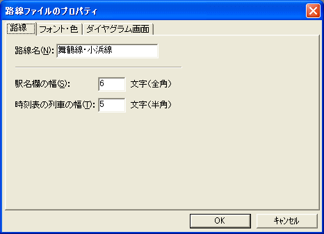
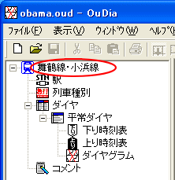

・・・[路線ファイルのプロパティ]ダイアログが開きます。
まず最初に、作成するダイヤの路線名を設定しましょう。
１．メニュー[ファイル]→[路線ファイルのプロパティ]を選択してください。
・・・[路線ファイルのプロパティ]ダイアログが開きます。
 『路線ビュー』の[路線]アイコンをダブルクリックしても、同じ効果があります。
『路線ビュー』の[路線]アイコンをダブルクリックしても、同じ効果があります。
２． [路線ファイルのプロパティ] の上部のタブ [路線] を選択して、[路線名] テキストボックスに任意の路線名を入力してください。

（図：[路線ファイルのプロパティ]ダイアログ）
３． [OK] を押してください。
・・・ 『路線ファイルのプロパティ』ダイアログが消えます。
『路線ビュー』の一番上の [路線]アイコンのテキストが、入力した路線名に変わります。

（図：[路線ビュー]）